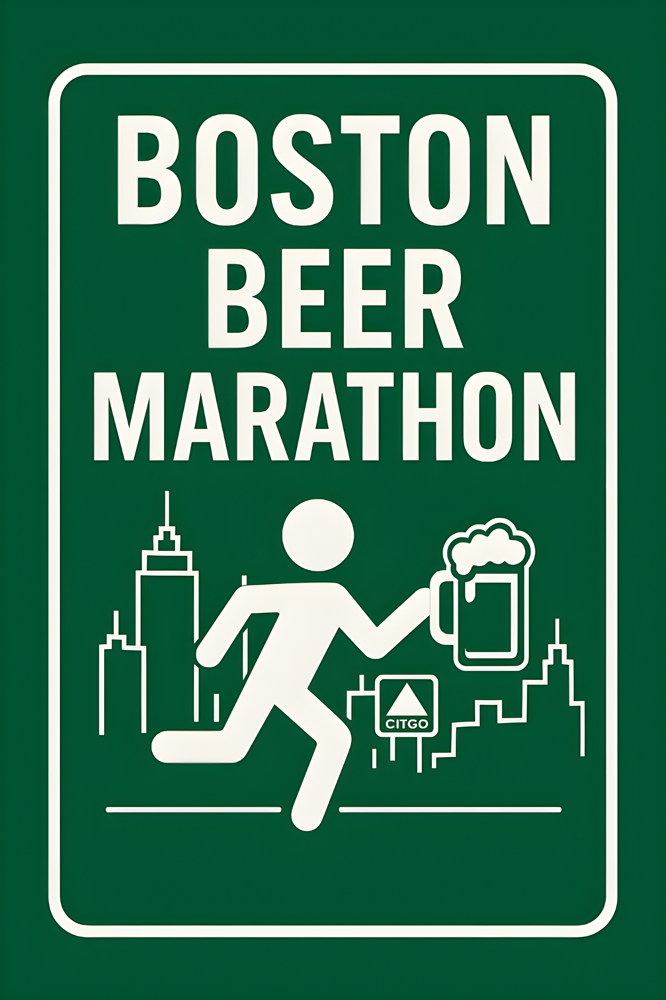

The Boston Beer Marathon is a self-organized, non-sanctioned running route through Boston bars.
It’s part running tour, part bar crawl, and entirely optional.
Drink. Run. Repeat.
A choose-your-own-distance route through Boston. Run the full course, half, or just meet along the way. There are no start times, no pacing rules, and no expectations beyond forward progress.
This is not a race. There is no registration, no timing, and no official organization. You are responsible for yourself, your decisions, and your ability to function the next day.
Pick a course. Show up. Run between stops. Have a beer (or don’t). Eat when needed. Hydrate when you remember. Continue until finished or until you decide you’ve made enough good decisions for one day.